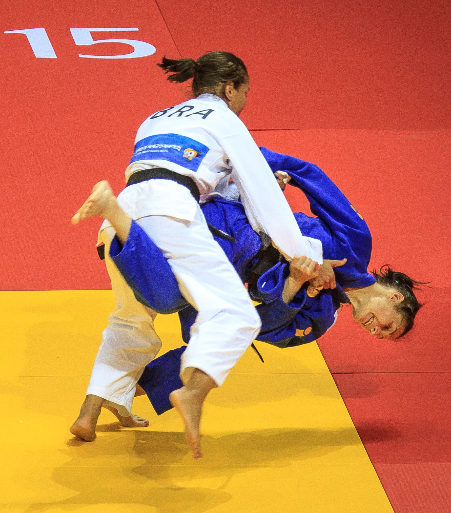

Categoria: Lutas

Arte marcial e esporte de combate de origem japonesa, baseado em técnicas de desequilíbrio, projeções, imobilizações e chaves articulares. Na Educação Física, é adaptado com atividades lúdicas de agarre e quedas seguras.
Tatame ou colchonetes agrupados, quimonos (judogui) são recomendados, mas na escola usa-se roupas confortáveis.
Desenvolver disciplina, respeito, equilíbrio, força e a capacidade de cair sem se machucar. O foco é o autocontrole e a cooperação, nunca a violência.